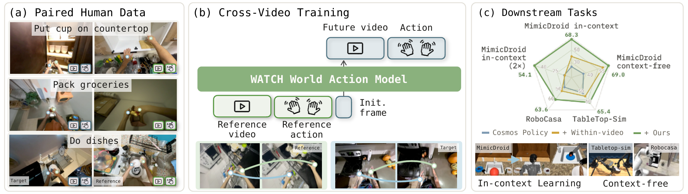
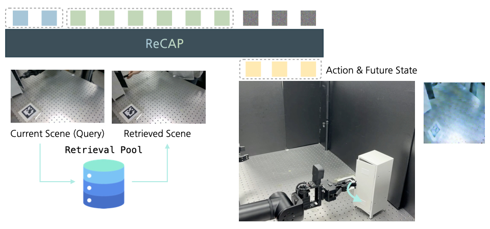
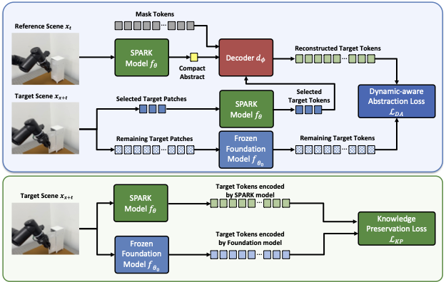
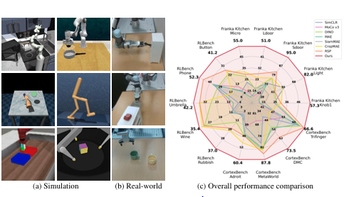
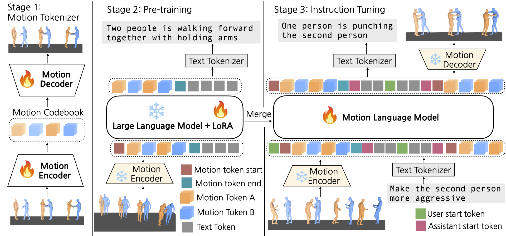
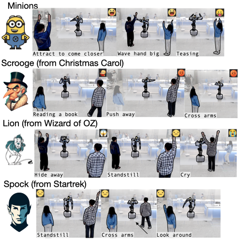
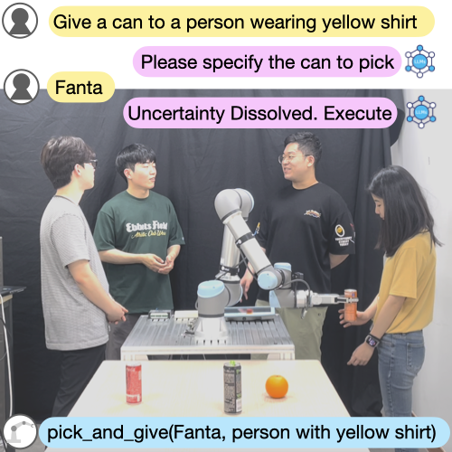

Hello, I'm Jeongeun Park
I am a Postdoctoral Researcher at Georgia Institute of Technology, working with Sehoon Ha. I received my Ph.D. from Korea University, where I worked with Sungjoon Choi.
I’m passionate about how robots can assist people in everyday life by collaborating and interacting naturally. In particular, I aim to investigate how foundation models can enable robots to understand, anticipate, and respond to human needs, making day-to-day tasks smoother and more intuitive.
News
- [October 2026]: I joined Georgia Institute of Technology as a Postdoctoral Researcher, working with Sehoon Ha.
- [September 2026]: SPARK, a simple post-training method for adapting pretrained visual representations to robot control, got accepted to CoRL 2026.
- [August 2026]: I gave a talk titled "Towards Safe and Efficient Robot Foundation Models" at Sungkyunkwan University (SKKU) [slides].
- [June 2026]: Two papers (GRIT on dexterous grasping and VIUGIC on transparent-object pose estimation) got accepted to IROS 2026.
- [April 2026]: My open-source tutorials on VLA (LeRobot-MuJoCo Tutorial, LeRobot-MuJoCo-VLA Tutorial) gained significant community interest with 446 stars in total on GitHub!
- [March 2026]: I gave a talk about robot foundation models at LG CNS.
- [January 2026]: Our paper about design optimization got accepted to ICRA 2026.
- [December 2025]: I have successfully defended my Ph.D. dissertation, “Towards Multimodal Foundation Models for Human-Centered Robot Behavior” at Korea University.
Experience
- [2026.10 - Present]: Postdoctoral Researcher, Georgia Institute of Technology (with Sehoon Ha)
- [2026.02 - 2026.08]: Postdoctoral Researcher, NAVER AI Lab (with Sangdoo Yun)
- [2024.04 - 2024.10]: Research Intern, NAVER AI Lab (with Sangdoo Yun)
- [2022.09 - 2022.12]: Visiting Researcher, Ingenuity Labs, Queen's University (with Matthew Pan)
- [2021.03 - 2026.02]: Ph.D. in Artificial Intelligence, Korea University (advised by Sungjoon Choi)
Selected Publications
All publications →
Learning Transferable World-Action Models from Task-Paired Human Videos
WATCH pre-trains a world-action model on task-paired human videos with cross-video prediction: given one demonstration as reference, the model predicts the actions and future frames of another demonstration of the same task, learning interactions that transfer across scenes and demonstrators and boosting downstream robot imitation learning.

Retrieve, Don't Retrain: Extending Vision-Language-Action Models to New Tasks at Test Time
ReCAP is a retrieval-augmented policy that adapts vision-language-action models to new tasks at deployment without retraining: the frozen policy conditions on retrieved trajectories at every control step, so new tasks are absorbed by indexing data rather than updating parameters.

SPARK: Simple Post-training for Adapting pRetrained Knowledge to Robot Control
A simple post-training method that adapts pretrained visual foundation models for robot control by combining dynamics-aware abstraction with knowledge preservation, yielding compact yet semantically meaningful state representations. SPARK consistently improves success rates and generalization across robotics benchmarks and transfers to real-world manipulation.

Token Bottleneck: One Token to Remember Dynamics
ICLR 2025 7th Robot Learning Workshop: Towards Robots with Human-Level Abilities
ToBo uses extreme masked autoencoding to learn compact, temporally aware visual state embeddings that boost robotic manipulation and locomotion performance in both simulation and real-world.

A Unified Framework for Motion Reasoning and Generation in Human Interaction
MoLaM (Interactive Motion language model) integrates language and motion modalities to understand, generate, and control interactive motions in multi-turn conversations, addressing the scarcity of multi-turn interactive motion data with a synthetic dataset, INTER-MT2.

Towards Embedding Dynamic Personas in Interactive Robots: Masquerading Animated Social Kinematics (MASK)
International Conference of Robotics and Automation (ICRA), 2025
ICRA 2025 The 2nd Workshop on Nonverbal Cues for Human-Robot Cooperative Intelligence
Employing a persona-driven interactive framework to animate an anthropomorphic robotic system, enhancing audience engagement through non-verbal interactions

CLARA: Classifying and Disambiguating User Commands for Reliable Interactive Robotic Agents
International Conference of Robotics and Automation (ICRA), 2024
Introducing a method for interactive robotic agents using large language models (LLMs) to classify user commands as clear, ambiguous, or infeasible, enhancing reliability by leveraging uncertainty estimation, situational awareness, and user interaction for disambiguation.
Reviewing activities
- • I serve as a reviewer at ICRA, RA-L, CoRL 2026.
- • I serve as a reviewer at ICRA, CHI, NeurIPS Workshop (Video-Language Models), CVPR, IROS, HRI 2025.
- • I serve as a reviewer at RA-L, IROS 2024.